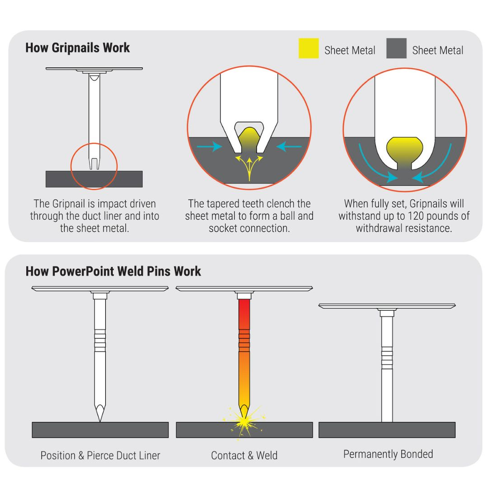

The Duct Liner System is part of a manufacturing line that produces rectangular duct sections from metal coils. In the sheet metal fabrication sector, this is called a Full Coil Line and it is the workhorse of the industry. My project, The Duct Liner System, has three main functions:
The uncoil, shear and gluing portions are relatively easy (rewiring, updating pneumatic actuators etc.). However, the challenge comes with the old Gripnail pinning machine. This will need to be replaced with a weld pinning type machine that has manual controls and a different footprint. I will be using an Allen Bradley Micro 850 plc to account for the new inputs/outputs associated with the weld pinning machine. A new sequence of operations will be written to integrate the dwelling/welding times for the machine, new safety protocols due to the welders etc., and much more. 